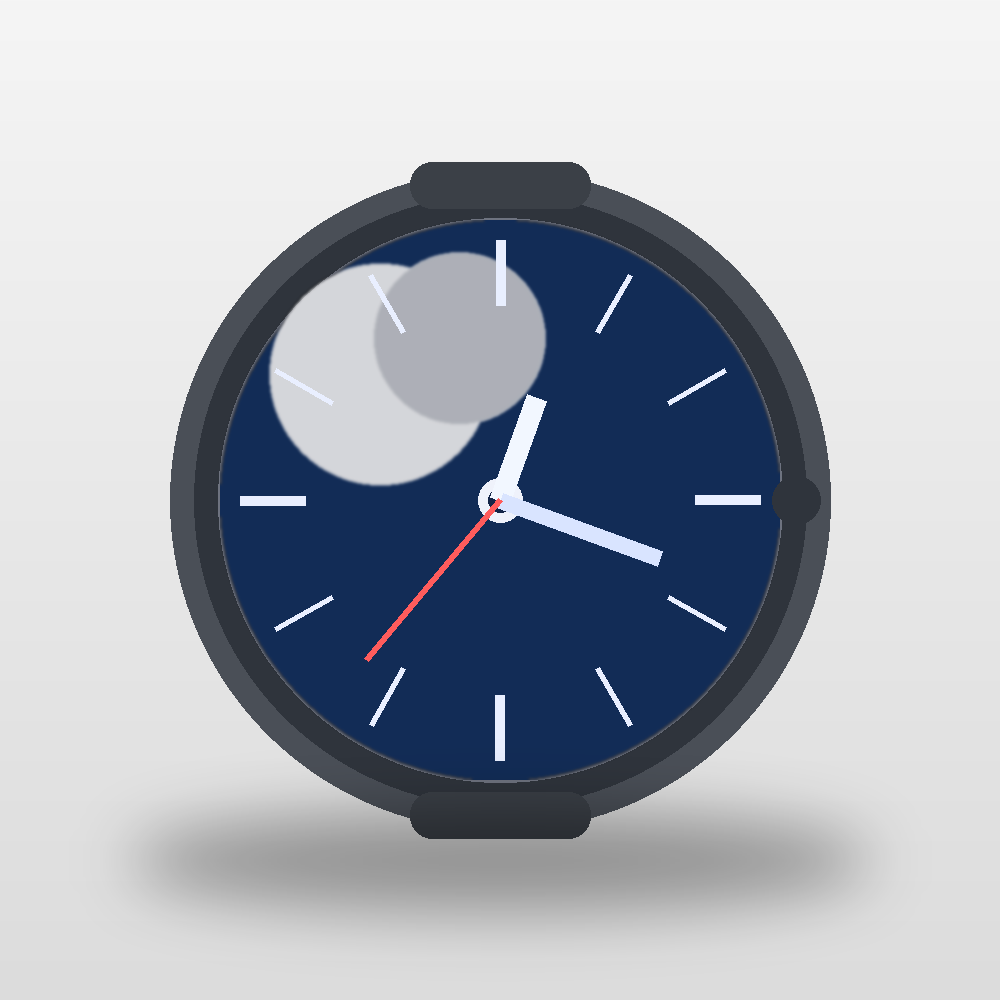

Tired of expensive watches that do nothing except calls, messages and tell the time?
This here is the Quantum Timeshift Solaris, built for much more.
It helps you study, tells you what your anxiety levels (emotions) show and all that other watches do.
It can even save your life! Using antigravitational technology, it hovers to a stop preventing a fatal fall.